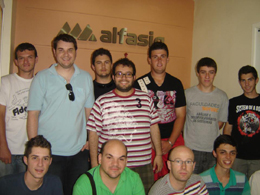
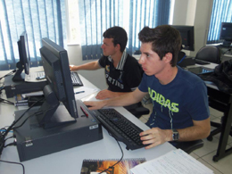

Sobre mim
É mestrando em Computação Apllicada na instituição Unisinos em São Leopoldo, bolsista do projeto Santander, seguindo a linha de pesquisa Engenharia de Software e Linguagens de Programação, com foco no em um jogo ubíquo, usando um histórico de contextos para montar perfis de usuários, aplicado ao jogo Ignis Anima, implementando ainda uma similaridade de trilhas. Formado em Análise e Desenvolvimento de Sistemas, na Faculdade de Tecnologia Senac de Passo Fundo, tendo desenvolvido o trabalho de conclusão de curso, voltado a área da saúde, em específico um sistema de gerenciamento médico, tratando questões de relacionamento paciente, médico e secretária. Facilitando o dia-dia de ambos. Possui experiência na área de Ciência da Computação, com ênfase em Sistemas de Informação, conhecimentos e experiência em linguagens de programação, dentre elas: Java e PHP. Além de ter experiência em ferramentas Oracle e, também, google. Possibilidades e interesse de estudos e pesquisa nas seguintes sub-áreas: engenharia de software, algoritmos e estrutura de dados, fatores humanos em sistemas computacionais, qualidade de software, engenharia da usabilidade, dispositivos móveis, computação móvel e ubíqua, gestão e governança de TI.



Palestras
Minhas palestras sobre Computação Móvel e Ubíqua, HTML 5 e CSS3, E-Commerce.
Estudos
Mestrado em Computação Aplicada - UNISINOS
Disciplinas - 2014/1
- Modelagem e Simulação: aprovado, nota 7,0.
- Inteligência Artificial e Sistemas Inteligentes: aprovado, nota 9,8.
- Técnicas de Programação: aprovado, nota 8,2.
- Tópicos Avançados em Sistemas Distribuídos: aprovado, nota 8,5.
Disciplinas - 2014/2
- Análise de Algoritmos: aprovado, nota 10,0.
- Probabilidade e Inferência Estatística: aprovado, nota 9,4.
- Desenvolvimento de Software Orientado à Computação Móvel e Ubíqua: aprovado, nota 8,0.
- Inteligência Artificial Aplicada à Educação: aprovado, nota 9,5.
- Exame de Proficiência em Língua Inglesa (Tópico: Escrita): aprovado, nota P.
Disciplinas - 2015/1
-
Avançando na proposta de dissertação
Status:
Link da publicação: -
DevMedia: Weka Software: Mineração de dados com Weka.
Status: Publicado revista SQL Magazine 128.
Link da publicação: Weka Software -
Artigo: Prevaba Um Modelo Bayesiano para Predição da Existência de Vítimas em Acidentes de Trânsito
Status: Em avaliação para possível publicação.
Link da publicação: -
Artigo: iSorting: Um Estudo Sobre Otimização em Algoritmos de Ordenação
Status: Em avaliação para possível publicação.
Link da publicação:
Disciplinas - 2015/2
Análise e Desenvolvimento de Sistemas - SENAC
Disciplinas - 2010/2
- Análise e Modelagem de Sistemas: aprovado, nota/conceito: B, CH: 72 horas.
- Gestão Empresarial: aprovado, nota/conceito: B, CH: 72 horas.
- Inglês Instrumental: aprovado, nota/conceito: B, CH: 36 horas.
Disciplinas - 2011/1
- Algoritmos e Lógica de Programação: aprovado, nota/conceito: B, CH: 72 horas.
- Aplicativos e Ferramentas Web: aprovado, nota/conceito: A, CH: 72 horas.
- Matemática para Computação: aprovado, nota/conceito: B, CH: 72 horas.
- Organização de Computadores: aprovado, nota/conceito: A, CH: 72 horas.
- Sistemas de Informação: aprovado, nota/conceito: B, CH: 72 horas.
Disciplinas - 2011/2
- Estatística: aprovado, nota/conceito: B, CH: 36 horas.
- Estrutura de Dados: aprovado, nota/conceito: A, CH: 72 horas.
- Programação Estruturada: aprovado, nota/conceito: C, CH: 72 horas.
- Programação para a Internet: aprovado, nota/conceito: A, CH: 72 horas.
Disciplinas - 2012/1
- Engenharia de Software: aprovado, nota/conceito: B, CH: 72 horas.
- Linguagens de Programação: aprovado, nota/conceito: B, CH: 36 horas.
- Programação Orientada a Objetos: aprovado, nota/conceito: B, CH: 108 horas.
- Projeto de Banco de Dados: aprovado, nota/conceito: C, CH: 72 horas.
- Redes de Computadores: aprovado, nota/conceito: A, CH: 72 horas.
Disciplinas - 2012/2
- Análise Orientada a Objetos: aprovado, nota/conceito: B, CH: 36 horas.
- Aplicações de Banco de Dados: aprovado, nota/conceito: C, CH: 72 horas.
- Gerenciamento de Projetos: aprovado, nota/conceito: B, CH: 72 horas.
- Linguagem de Programação Visual: aprovado, nota/conceito: C, CH: 72 horas.
- Qualidade de Software: aprovado, nota/conceito: A, CH: 36 horas.
Disciplinas - 2013/1
- Análise e Projeto de Software: aprovado, nota/conceito: B, CH: 36 horas.
- Comércio Eletrônico: aprovado, nota/conceito: B, CH: 36 horas.
- Empreendedorismo: aprovado, nota/conceito: B, CH: 72 horas.
- Legislação Aplicada: aprovado, nota/conceito: A, CH: 72 horas.
- Projeto de Conclusão de Curso: aprovado, nota/conceito: A, CH: 36 horas.
- Sistemas Operacionais: aprovado, nota/conceito: A, CH: 72 horas.
Disciplinas - 2013/2
- Aplicações Web: aprovado, nota/conceito: A, CH: 72 horas.
- Engenharia da Usabilidade: aprovado, nota/conceito: A, CH: 72 horas.
- Projeto Integrador de Desenvolvimento de Sistemas: aprovado, nota/conceito: A, CH: 72 horas.
- Segurança de Sistemas: aprovado, nota/conceito: A, CH: 36 horas.
- Tópicos Especiais: aprovado, nota/conceito: A, CH: 36 horas.
- Trabalho de Conclusão: aprovado, nota/conceito: A, CH: 72 horas.
Meus Pensamentos
Todas as frases abaixo são de minha autoria,
Paulo Henrique Santini
Obrigado pela visita, aproveite o máximo esse espaço interativo !!!
- Eu vejo a tristeza, mas prefiro acreditar que a felicidade existe. A motivação para a conquista é mais forte que a memória sentimental arruinada;
- A brisa que aponta no fim da ponte,
Felicidade que se aproxima do monte.
A tristeza evacua feito berrante,
Brilha no céu uma lua gigante; - Uma estrela no céu,
um vento no pescoço,
um pôr do sol no horizonte,
uma semente na terra,
um olhar com profundeza,
um abraço com firmeza; - Acredite na felicidade, mesmo sabendo que você poderá não ser aquilo que um dia sonhou ser;
- Você quer passar a sua vinda inteira aqui, dando scroll infinito. Olhe isso, motive-se, feche e aproveite a vida;
- A falsidade é tanta que a mentira não encontra portas;
- Um passo para a alegria, dois para uma conquista;